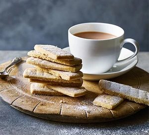

Shortbread Recipe

Description
This recipe is for the most basic biscuit ever
Ingredients
- 150g plain flour, plus extra for dusting
- 100g butter, chilled and cubed
- 50g caster sugar, plus 1 tbsp for sprinkling
Steps
- Heat the oven 170C/150C fan/gas 3. Put the flour, butter and sugar into a mixing bowl. Use your hands to combine the ingredients until the mixture looks like breadcrumbs, then squeeze until it comes together as a dough.
- On a lightly floured surface, use a rolling pin to roll out the dough to ½ cm thick. Cut the dough into fingers and place on a lined baking tray. Use a fork to create imprints, then sprinkle with the remaining caster sugar.
- Chill the dough in the fridge for 20 mins, then bake for 15-20 mins until golden brown. Remove the shortbread fingers from the oven and leave to cool on the tray for 10 mins.